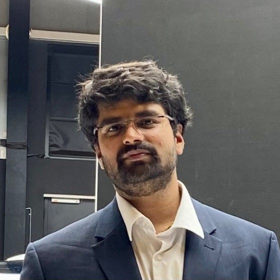

|  | Ramanuja Sreaus R S, B.Tech (Mechanical Engg)Product Management Intern at Paua Tech Dedicated Intern with experience in achieving tangible results and cross-team collaboration. Proactive and excited to partner with like-minded individuals to achieve goals. Eager to learn, grow and excel in your company. Contact details: Email: sreaus006@gmail.com LinkedIn:Click here |
Defined clear operational quality requirements during the early stages of partner education (PR & IM ) in order to ensure the success of the Partner once the live stage has arrived without compromising TTM.
Analysis of value and waste in a production line for an automotive brake drum was performed. A thorough analysis of values and waste for an automotive brake drum by using VSM techniques was conducted.
Feasible improvements in the manufacturing processes shall be achieved by adopting to lean production techniques. Value Stream Mapping (VSM) is a lean tool used to identify lean techniques.
Defined pain points and developed ideas to create an app to integrate public transport services and micro mobility services.
Created a roadmap to simplify ticketing services for consumers with simplest methods and single ticket from initial point to destination.
This project focuses on automated charging systems for electric vehicles and discusses various factors that affects location selection for electric vehicle charging. The first part explains various factors that influence the location selection of charging stations for electric vehicles.
A market survey was performed in order to develop a futuristic and customer-centric design strategy for electric charging infrastructure. The last part discusses key design and operations strategies of electric charging infrastructure.
A complete product life cycle assessment of E-bikes from market survey to sales and marketing was done. As the lead of product planning team, I played a pivotal role in product research, task flow- chart mapping, communication and data transfer with other teams, plotting requirements management, and developed strategy in the workflow.
The End-of-life of the product with overall product timeline was set by the product planning team. All the other teams such as prototype development, process planning, production, and sales teams worked in harmony and assessed the life cycle of E-bikes.
| MS Office, | Power BI, | Salesforce, | HTML, | SQL, | Asana |
| Tableau, | JIRA, | Confluence, | R- Program, | Python |
| Flexibility and Adaptability, | Communication, | Reliable, | Problem-solving, | Forecasting |
| English | ⭐⭐⭐⭐⭐ |
| German | ⭐⭐⭐ |
| Sanskrit | ⭐⭐⭐ |
| Tamil | ⭐⭐⭐⭐⭐ |